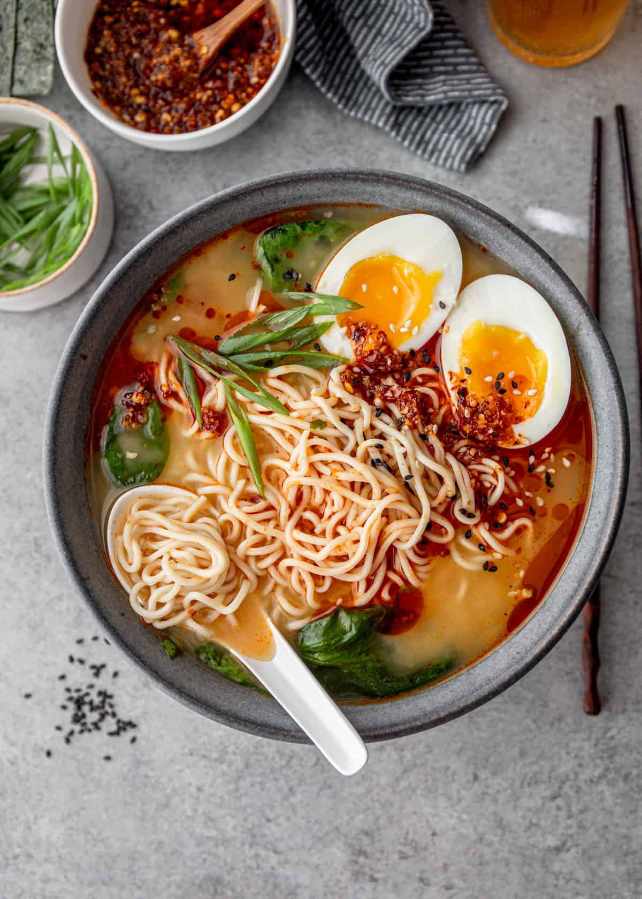

Ramen

Ramen: A Bowl Worth the Time
Ramen isn’t something you throw together in five minutes. It takes patience, care, and respect for every ingredient. The broth needs hours to build its flavor, the noodles must have just the right bite, and the toppings? They have to complement, never overpower. This bowl is a quiet craft, born from years behind the stove and a deep understanding of balance.
Ramen’s story is one of adaptation and resilience. Originally brought to Japan from China in the late 19th or early 20th century, it was embraced and transformed by Japanese cooks who made it their own. After World War II, when food was scarce, ramen became an affordable, hearty meal for the working class. Over time, different regions added their own twists — rich tonkotsu broth in Hakata, miso-based in Sapporo, and light soy sauces in Tokyo. Each bowl reflects its place of origin and the people who’ve passed down their recipes, making ramen both a cultural staple and a personal tradition.
Ingredients
- Pork bones — a good handful, the heart of your broth
- Clean water — to coax every bit of flavor out
- Soy sauce — full-bodied, no shortcuts here
- Mirin and sake — for a subtle sweetness and depth
- Fresh alkaline ramen noodles — the chewy, springy kind
- Chashu pork — tender, slow-cooked just right
- Soft-boiled eggs — with that silky, slightly runny yolk
- Green onions — chopped simply, nothing fancy
- Bamboo shoots — salty and crunchy, a nice contrast
- Nori — a crisp seaweed sheet to finish it off
- Garlic — lightly roasted or fried for aroma
- Optional: chili oil or togarashi for a gentle kick
Steps
- Place the pork bones in a large pot, cover with water, and bring to a strong boil. Skim off any impurities to keep your broth clean and clear.
- Simmer the broth for several hours until it’s rich and creamy, full of deep pork flavor. Strain out the bones.
- Prepare your tare by mixing soy sauce, mirin, and sake with care — it’s the seasoning that ties everything together.
- Cook the fresh noodles just right — firm but tender — and drain well.
- Place noodles in a warm bowl, pour over the hot broth generously.
- Arrange slices of chashu, halved soft-boiled eggs, green onions, bamboo shoots, and a sheet of nori on top.
- Add garlic and chili oil if you like, but keep it balanced.
- Serve immediately and enjoy every thoughtful slurp.
Home